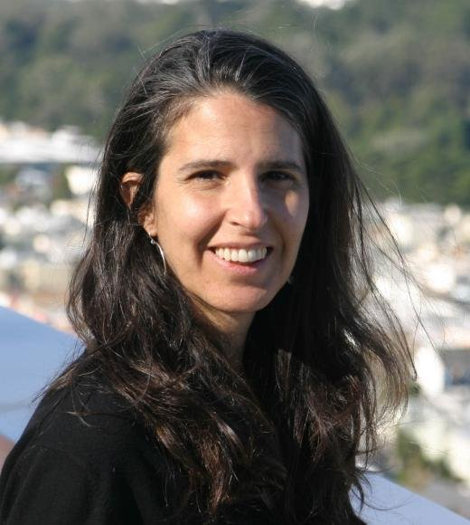

Our team

J. W. Goethe
CEO and founder
I throw myself down among the tall grass by the trickling stream; and, as I lie close to the earth, a thousand.

G. W. John
Co-founder
Then, my friend, when darkness overspreads my eyes, and heaven and earth seem to dwell in my soul.

J. G. Wolf
Evangelist
I should be incapable of drawing a single stroke at the present moment; and yet I feel that I never was a greater.

A. Gang
CFO
Artist than now. When, while the lovely valley teems with vapour around me, and the meridian sun strikes.